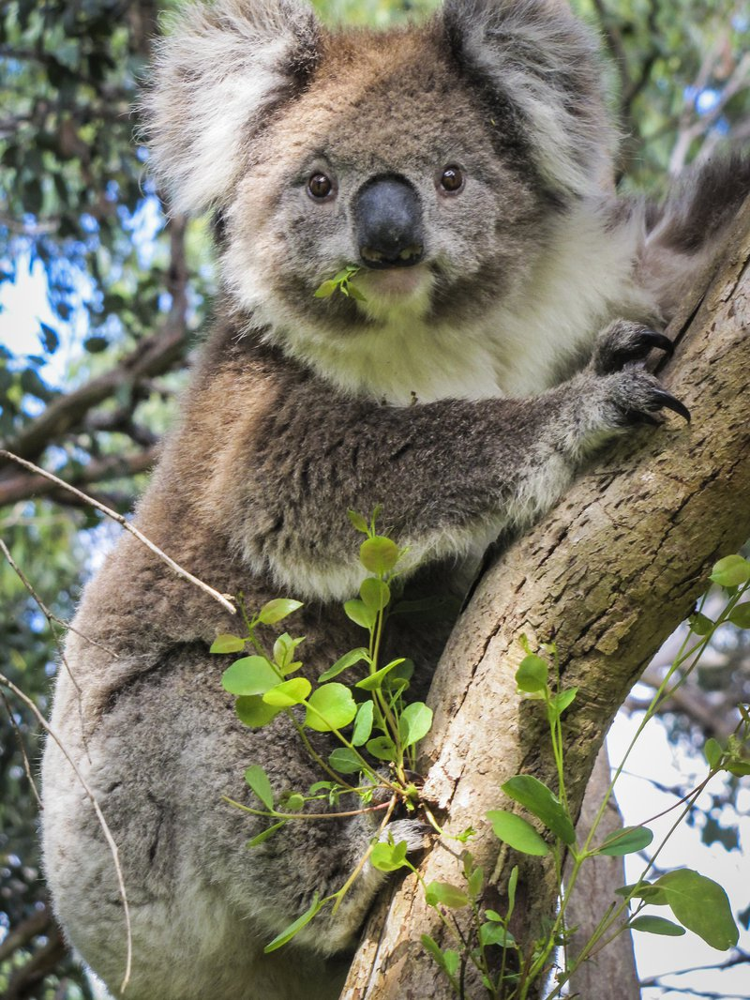

Koale su vrlo lenje zivotinje koje mogu da spavaju tokom dana od 18 do 22 sata.One podsecaju na male plisane medvedice pa se nazivaju jos " australiijski medvedici ".
Reč koala dolazi od reči aboridžinskog australijskog jezika (Daruk jezika) gula. Opšte je prihvaćeno da je naziv " koala " aboridžinska reč i znači " bez vode ". To je zbog činjenice da koale zapravo ne piju vodu, ili veoma retko, što zavisi od njihove ishrane koja se sastoji od lišća eukaliptusa koja sadrže dovoljnu količinu vode u sebi.
